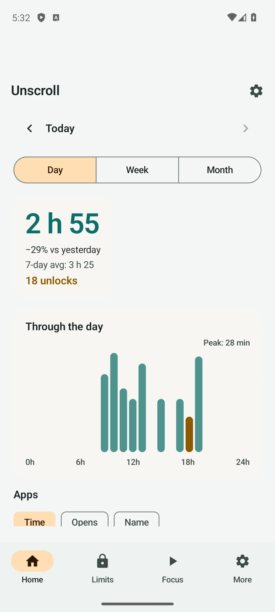
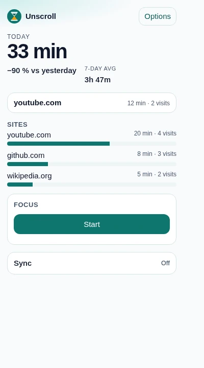
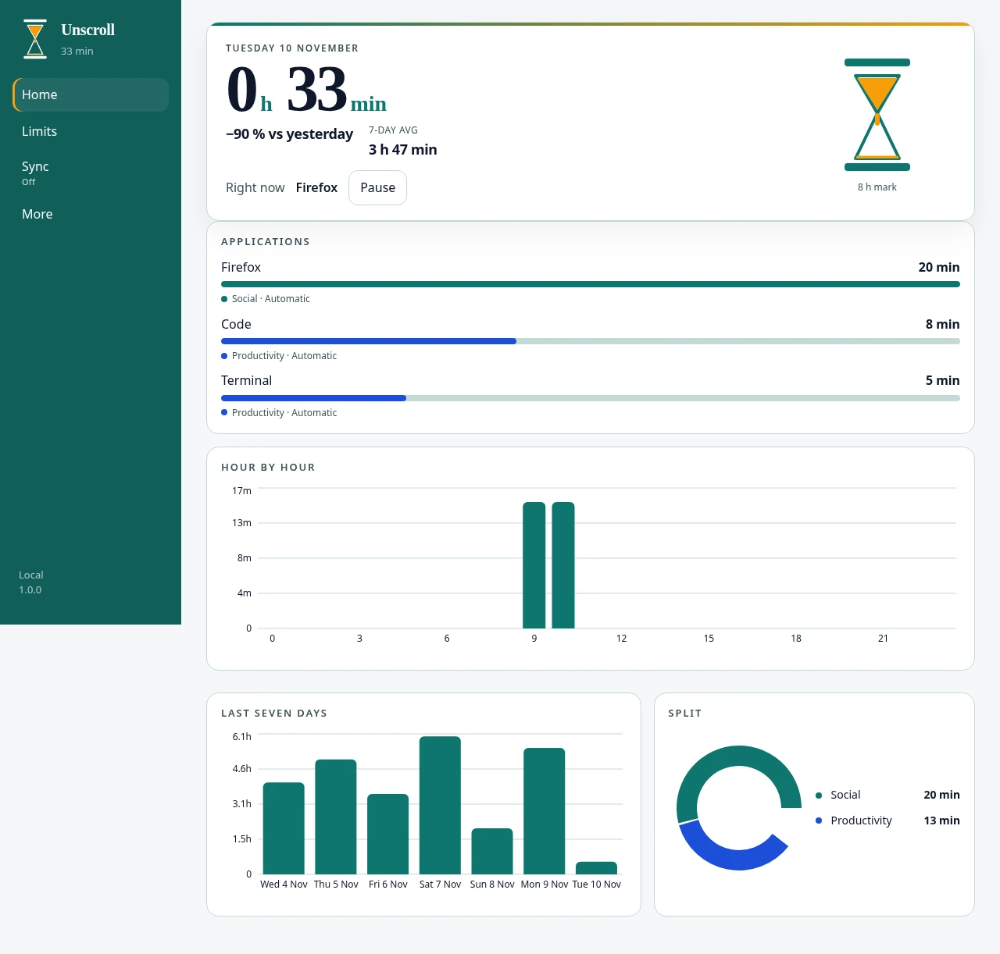

Sample
Today
- Apps 2h 10m
- Sites 48m
- Focus 25m
Android
AGPL-3.0Android 8.0+
Daily caps and blocks for the apps on your phone, and rings for the time spent today.
Open source · AGPL-3.0
A free, open-source screen-time app for Android, desktop, and the browser. Local-first, no trackers, no ads. Self-host encrypted sync, or use Unscroll Cloud.
One edition. Every feature is free. The only paid option is hosted sync.
Sample day
3h 23m
on the device today
The three apps
One public monorepo. Get the apps from GitHub.
Sample
Today
Android 8.0+
Daily caps and blocks for the apps on your phone, and rings for the time spent today.
Focus sessions4
Limits reached2
Linux AppImage. Windows and macOS from source.
Limits for desktop apps, focus sessions, and a week of charts stored on the machine.
Blocked
video.example
Daily limit reached for this site
Available again tomorrow
Chrome, Edge, and Firefox
Site limits in the browser you already use. When the time is up, the page is replaced by a block screen.
In the apps
Current English screenshots of Unscroll on Android, in the browser, and on the desktop.



What it does
Limits, focus, sleep, and stats. Everything stays on your device.
Set a cap for an app or a site. When the time is gone, Unscroll blocks it until the next day, or until a schedule says it may open.
Start a session with a short allow-list. Everything else stays closed until the session ends.
Choose a nightly window. The apps and sites you name stay closed inside it. Weekdays and weekends can use different hours.
Time by app, site, and day. Rings for today, bars for the week. The history stays on the device.
A nudge before a limit, before sleep, or when a session runs long. Reminders are scheduled on the device. They are not messages from a server.
Self-host
Free, forever. A small Go server, ready for Docker. It stores ciphertext only — it never sees your key or your data.
git clone \
https://github.com/sepiropht/unscroll.git
cd unscroll/server
docker build -t unscroll-sync-server .
docker run --rm -p 127.0.0.1:8781:8781 \
-e ADDR=0.0.0.0:8781 \
-v unscroll-sync:/data \
unscroll-sync-serverKeep the server on localhost and put TLS in front. In each app, open Sync and point it at your own https origin.
Why open source
One edition, AGPL-3.0, every feature free. No feature gating. Your usage stays on the device unless you turn sync on.
The Android app, desktop app, browser extension, and sync server live in one monorepo. You can audit every line.
No analytics SDK, no crash-report vendor, and no third-party pixels. This page is static files, with no beacons.
Usage, limits, and schedules are stored locally. You can use Unscroll without an account.
Optional sync encrypts data on the device. The server stores opaque ciphertext and never sees the key. Self-host it, or use Unscroll Cloud.
Sync
The apps stay free and complete either way. You only pay if you want hosted sync.
Your server
Free forever
Run the Go server with Docker or a binary. Unlimited, no trial, no plan screen.
Hosted sync
€2.99/mo or €24/yr
14-day free trial. No card needed to start.
Hosted sync if you don’t want to run a server. Subscribe from the app, via Stripe.
Questions
No. Limits and history live on the device. Sync, if you turn it on, creates an anonymous account — no email, no password.
Nothing, unless you turn sync on. Sync encrypts data on the device and sends only ciphertext to the server you chose — yours, or Unscroll Cloud.
An Android app (8.0+), a desktop app (Linux AppImage; Windows and macOS can be built from source), and a browser extension for Chrome, Edge, and Firefox.
Yes. The phone and desktop apps block apps. The extension blocks sites. Focus and sleep can include both.
The whole project is under the GNU AGPL v3. If you run a modified version as a service for other people, you share that version’s source under the same license.
From the public repository on GitHub. There is one edition, with every feature included.
Self-hosting is free. Unscroll Cloud, the hosted option, is €2.99/month or €24/year, with a 14-day free trial.